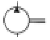
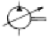

지게차운전기능사 (2009-07-12 기출문제)
1. 기관에 사용되는 습식 라이너의 단점은?
- 냉각효과가 좋다
- 냉각수가 크랭크실로 누출될 우려가 있다.
- 실린더의 열변형이 심하다
- 라이너의 압입 압력이 높다
(정답률: 59%)

2. 디젤기관에서 실화할 때 나타나는 현상으로 옳은?
- 냉각수가 유출한다.
- 연료소비가 감소한다.
- 기관이 과냉한다.
- 기관회전이 불량해진다.
(정답률: 67%)
3. 엔진의 회전수를 나타낼 때 rpm 이란?
- 시간당 엔진회전수
- 분당 엔진회전수
- 초당 엔진회전수
- 10분간 엔진회전수
(정답률: 88%)
4. 디젤엔진에서 연료계통의 공기빼기 순서로 맞는 것은?
- 공기펌프 → 분사노즐 → 분사펌프
- 공기여과기 → 분사펌프 → 공급펌프
- 공급펌프 → 연료여과기 → 분사펌프
- 분사펌프 → 연료여과기 → 공급펌프
(정답률: 75%)
5. 기관이 작동 중 라디에이터 캡 쪽으로 물이 상승하면서 연소가스가 누출될 때의 원인에 해당되는 것은?
- 실린더 헤드에 균열이 생겼다.
- 분사노즐의 동 와셔가 불량하다.
- 물 펌프에 누설이 생겼다.
- 라디에이터 캡이 불량하다.
(정답률: 53%)
6. 윤활방식 중 오일펌프로 급유하는 방식은?
- 비산식
- 압송식
- 분사식
- 비산분무식
(정답률: 74%)
7. 라디에이터 캡의 스프링이 파손 되었을 때 가장 먼저 나타나 는 현상은?
- 냉각수 비등점이 낮아진다.
- 냉각수 순환이 불량해진다.
- 냉각수 순환이 빨라진다.
- 냉각수 비등점이 높아진다.
(정답률: 53%)
8. 기관오일 압력이 상승하는 원인에 해당 되는 것은?
- 오일펌프가 마모되었을 때
- 오일 점도가 높을 때
- 윤활유가 너무 적을 때
- 유압조절 밸브 스프링이 약할 때
(정답률: 70%)
9. 디젤기관 장치 중에서 터보차저의 기능으로 맞는 것은?
- 실린더 내에 공기를 압축 공급하는 장치이다
- 냉각수 유량을 조절하는 장치이다
- 기관 회전수를 조절하는 장치이다
- 윤활유 온도를 조절하는 장치이다
(정답률: 68%)
10. 기관 실린더 벽에서 마멸이 가장 크게 발생하는 부위는?
- 상사점 부근
- 하사점 부근
- 중간 부분
- 하사점 이하
(정답률: 80%)
11. 기관의 연소실 방식에서 흡기가열식 예열장치를 사용하는 것은?
- 직접분사식
- 예연소실
- 와류실식
- 공기실식
(정답률: 46%)
12. 디젤기관의 출력을 저하 시키는 직접적인 원인이 아닌 것은?
- 실린더 내 압력이 낮을 때
- 연료 분사량이 적을 때
- 노킹이 일어날 때
- 점화플러그 간극이 들릴 때
(정답률: 63%)
13. 교류발전기의 특징이 아닌 것은?
- .브러시의 수명이 길다.
- .전류 조정기만 있다.
- .저속 회전시 충전이 양호하다.
- .경량이고 출력이 크다.
(정답률: 54%)
14. 방향지시등의 한쪽 등 점멸이 빠르게 작동하고 있을 때, 운전자가 가장 먼저 점검하여야 할 곳은?
- 전구(램프)
- 플래셔 유닛
- 콤비네이션 스위치
- 배터리
(정답률: 75%)
15. 다음 회로에서 퓨즈에는 몇 A가 흐르는가?(문제 복원 오류로 그림이 없습니다. 정답은 2번입니다.)
- 5A
- 10A
- 50A
- 100A
(정답률: 83%)
16. 납산축전지에 증류수를 자주 보충시켜야 한다면 그 원인에 해당 될 수 있는 것은?
- 충전 부족이다.
- 극판이 황산화 되었다.
- 과충전 되고 있다.
- 과방전 되고 있다.
(정답률: 50%)
17. 황산과 증류수를 이용하여 전해액을 만들 때의 설명으로 옳은?
- 황산을 증류수에 부어야 한다.
- 증류수를 황산에 부어야 한다.
- 황산과 증류수를 동시에 부어야한다.
- 철제 용기를 사용한다.
(정답률: 60%)
18. 지게차 기관의 기동용으로 사용하는 일반적인 전동기는?
- 직권식 전동기
- 분권식 전동기
- 복권식 전동기
- 교류 전동기
(정답률: 49%)
19. 굴삭기를 트레일러에 상차하는 방법에 대한 것으로 가장 적합하지 않는 것은?
- 가급적 경사대를 사용한다.
- 트레일러로 운반 시 작업 장치를 반드시 앞쪽으로 한다.
- 경사대는 10~15° 정도 경사 시키는 것이 좋다.
- 붐을 이용하여 버킷으로 차제를 들어 올려 탑재하는 방법도 이용되지만 전복의 위험이 있어 특히 주의를 요하는 방법이다.
(정답률: 64%)
20. 지게차에서 틸트 실린더의 역할은?
- 포크의 상·하 이동
- 차체 수평유지
- 마스트 앞·뒤 경사각 유지
- 차체 좌·우 회전
(정답률: 66%)
21. 무한궤도식 건설기계에서 주행 구동체인 장력 조정 방법은?
- 구동스프로킷을 전·후진 시켜 조정한다.
- 아이들러를 전·후진시켜 조정한다.
- 슬라이드 슈의 위치를 변화시켜 조정한다.
- 드레그 링크를 전·후진시켜 조정한다.
(정답률: 65%)
22. 무한궤도기중기의 안전장치를 열거한 사항으로 거리가 먼 것은?
- 과속 방지장치
- .붐 전도 방지장치
- 권상 과하중 방지장치
- 경보장치
(정답률: 47%)
23. 기계식 모터그레이더 작업 동력전달 부분에 설치된 전단핀 형식의 안전장치로 과부하를 제한하고 기계의 파손을 방지하는 것은?
- 세레이션
- 시어핀
- 파워 콘트롤 장치
- 스프레더
(정답률: 42%)
24. 휠구동식 건설기계의 수동변속기에서 클러치 판 댐퍼 스프링의 역할은?
- 클러치 브레이크 역할을 한다.
- 클러치 접속시 회전 충격을 흡수한다.
- 클러치판에 압력을 가한다.
- 클러치 분리가 잘 되도록 한다.
(정답률: 72%)
25. 수동변속기가 장착된 건설기계에 기어의 이중 물림을 방지하는 장치에 해당 되는 것은?
- 인젝션 장치
- 인터쿨러 장치
- 인터록 장치
- 인터널 기어 장치
(정답률: 59%)
26. 유압식 브레이크 장치에서 제동이 잘 풀리지 않는 원인에 해당 되는 것은?
- 브레이크 오일 점도가 낮기 때문
- 파이프 내의 공기의 침입
- cpr 밸브의 접촉 불량
- 마스터 실린더의 리턴구멍 막힘
(정답률: 47%)
27. 등록이전 신고는 어느 경우에 하는가?
- 건설기계 등록지가 다른 시·도로 변경되었을 때
- 건설기계 소재지에 변동 있을 때
- 건설기계 등록사항을 변경하고자 할 때
- 건설기계 소유권을 이전하고자 할 때
(정답률: 46%)
28. 정기 검사대상 건설기계의 정기검사 신청기간으로 맞는 것은?
- 건설기계의 정기 검사 유효 기간 만료일 전후 15일 이내에 신청한다.
- 건설기계의 정기검사 유효기간 만료일 전 5일 이내에 신청한다.
- 건설기계의 정기검사 유효기간 만료일 전후 30일 이내에 신청한다.
- 건설기계의 정기검사 유효기간 만료일 후 15일 이내에 신청한다.
(정답률: 58%)
29. 건설기계조종사가 국토해양부령이 정하는 사항에 관하여 변경이 있을 때 허위로 신고를 한 경우의 과태료처분의 기준은?
- 5만원
- 50만원
- 10만원
- 20만원
(정답률: 51%)
30. 앞차와의 안전거리를 가장 바르게 설명한 것은?
- 앞차 속도의 0.3배 거리
- 앞차와의 평균 8미터 이상거리
- 앞차의 진행방향을 확인할 수 있는 거리
- 앞차가 갑자기 정지하였을 때 충돌을 피할 수 있는 필요한 거리
(정답률: 85%)
31. 교차로에서 진로를 변경하고자 할 때에 교차로의 가장자리에 이르기 전 몇 미터 이상의 지점으로부터 방향지시등을 켜야 하는가?
- 10m
- 20m
- 30m
- 40m
(정답률: 65%)
32. 교통안전 표지의 종류는?
- 교통안전 표지는 주의, 규제, 지시, 안내, 교통표지로 되어있다
- 교통안전 표지는 주의, 규제, 지시, 보조, 노면표지로 되어있다
- 교통안전 표지는 주의, 규제, 지시, 안내, 보조표지로 되어있다
- 교통안전 표지는 주의, 규제, 안내, 보조, 통행표지로 되어있다
(정답률: 63%)
33. 편도 4차로 자동차 전용도로에서 굴삭기와 지게차의 주행 차선은?
- 1차로
- 2차로
- 4차로
- 3차로
(정답률: 83%)
34. 긴급 자동차의 우선통행에 관한 설명이 잘못된 것은?
- 소방자동차, 구급 자동차는 항시 우선권과 특례의 적용을 받는다.
- 긴급 용무 중일 때에만 우선 통행 특례의 적용을 받는다.
- 우선특례의 적용을 받으려면 경광등을 켜고 경음기를 울려야 한다.
- 긴급 용무임을 표시할 때는 제한속도 준수 및 앞지르기 금지, 끼어들기 금지 의무 등의 적용을 받지 않는다.
(정답률: 67%)
35. 중고건설기계를 매매업자에 의하지 아니하고 당사자 간 거래할 때 사용할 수 있는 양도증명서 발급 및 검인 기관은?
- 대통령
- 행정안전부장관
- 국토해양부장관
- 시·도지사
(정답률: 83%)
36. 건설기계의 주요 구조를 변경하거나 개조 한 때 실시하는 검사는?
- 수시점검
- 신규등록검사
- 정기검사
- 구조변경검사
(정답률: 86%)
37. 유압 실린더 중 피스톤의 양쪽에 압유를 교대로 공급하여 양방향의 운동을 유압으로 작동시키는 형식은?
- 단동식
- 복동식
- 다동식
- 편동식
(정답률: 78%)
38. 유압 오일 내에 기포(거품)가 형성되는 이유로 가장 적절한 것은?
- 오일 속 이물질 혼입
- 오일의 열화
- 오일 속 공기 혼입
- 오일의 누설
(정답률: 77%)
39. 유압회로에서 입구 압력을 가압하여 유압실린더 출구 설정압력 유압으로 유지하는 밸브는?
- 릴리스 밸브
- 리듀싱 밸브
- 언로딩 밸브
- 카운터 밸런스 밸브
(정답률: 29%)
40. 유압 작동유의 구비 조건이 아닌 것은?
- 휘발성
- 윤활성
- 비압축성
- 적당한 유동성
(정답률: 68%)
41. 기어식 유압펌프에서 소음이 나는 원인으로 가장 거리가 먼 것은?
- 흡입 라인의 막힘
- 오일량의 과다
- 펌프의 베어링 마모
- 오일의 과부족
(정답률: 73%)
42. 유압 작동부에서 오일이 누유되고 있을 때 가장 먼저 점검하여야 할 곳은?
- 시일
- 피스톤
- 기어
- 펌프
(정답률: 48%)
43. 유압회로 내에서 유압을 일정하게 조절하여 일의 크기를 결정하는 밸브가 아닌 것은?
- 시퀸스 밸브
- 서보 밸브
- 언로드 밸브
- 카운터 밸런스 밸브
(정답률: 41%)
44. 정용량형 유압펌프의 기호는?


(정답률: 75%)
45. 호이스트형 유압호스 연결부에 가장 많이 사용하는 것은?
- 엘보 죠인트
- 니플 죠인트
- .소켓 죠인트
- 유니온 죠인트
(정답률: 57%)
46. 유압모터의 일반적인 특징으로 가장 적합한 것은?
- 운동량을 직선으로 속도조절이 용이하다.
- 운동량을 자동으로 직선조작 할 수 있다.
- 넓은 범위의 무단변속이 용이하다.
- 각도에 제한 없이 왕복 각운동을 한다.
(정답률: 57%)
47. 전기 화재시 가장 좋은? 소화기는
- 포말 소화기
- 이산화탄소 소화기
- 중조산식 소화기
- 산 알칼리 소화기
(정답률: 52%)
48. 안전 관리상 옳지 못한 것은?
- 기름 묻은 걸레는 정해진 용기에 보관한다.
- 흡연 장소로 정해진 장소에서 흡연한다.
- 쓰고 남은 기름은 하수구에 버린다.
- 연소하기 쉬운 물질은 특히 주의를 요한다.
(정답률: 89%)
49. 올바른 보호구 선택 시 적합하지 않은 것은?
- 사용목적에 적합하여야 한다.
- 사용방법이 간편하고 손질이 쉬워야 한다.
- 잘 맞는지 확인하여야 한다.
- 품질은 떨어져도 식별하기가 쉬워야 한다.
(정답률: 87%)
50. 작업자에서 방진마스크를 착용해야 할 경우는?
- 소음이 심한 작업장
- 분진이 많은 작업장
- 온도가 낮은 작업장
- 산소가 결핍되기 쉬운 작업장
(정답률: 89%)
51. 소화하기 힘든 정도로 화재가 진행된 현장에서 제일 먼저 취하여야 할 조치사항으로 가장 올바른 것은?
- 소화기 사용
- 화재 신고
- 인명 구조
- 경찰서에 신고
(정답률: 51%)
52. 해머 작업 시 틀린 것은?
- 장갑을 끼지 않는다.
- 작업에 알맞은? 무게의 해머를 사용한다.
- 해머는 처음부터 힘차게 때린다.
- 자루가 단단한 것을 사용한다.
(정답률: 84%)
53. 복스 렌치가 오픈 렌치보다 많이 사용되는 이유는?
- 값이 싸며 적은? 힘으로 작업할 수 있다.
- 가볍고 사용하는데 양손으로도 사용할 수 있다.
- 여러 가지 크기의 볼트, 너트에 사용할 수 있다.
- 볼트, 너트 주위를 완전히 감싸게 되어 사용 중에 미끄러지지 않는다.
(정답률: 81%)
54. 전기용접 작업 시 용접기에 감전이 될 경우가 아닌 것은?
- 발밑에 물이 있을 때
- 몸에 땀이 배어 있을 때
- 옷이 비에 젖어 있을 때
- 앞치마를 하지 않았을 때
(정답률: 83%)
55. 와이어 줄걸이 작업에서 사용되는 용구를 점검하여야 하는 안전 조건으로 맞는 것은?
- 단위 용구의 시험인양하중을 확인하여야 한다.
- 스크류 및 Pin의 상태를 확인하여야 한다.
- 샤클의 나사부는 해체하여 점검한다.
- 샤클 본체는 구부려서 인장강도 시험을 한다.
(정답률: 47%)
56. 작업자가 작업을 할때 반드시 알아두어야 할 사항이 아닌 것은?
- 안전수칙
- 작업량
- 기계기구의 사용법
- 경영관리
(정답률: 85%)
57. 다음 중 감전재해의 요인이 아닌 것은?
- 충전부에 직접 접촉하거나 안전거리 이내 접근 시
- 절연 열화 손상 파손 등에 의해 누전된 전기기기 등에 접촉시
- 작업 시 절연장비 및 안전장구 착용
- 전기기기 등의 외함과 대지 간의 정전용량에 의한 전압 발생부분 접촉 시
(정답률: 84%)
58. 22.9kV 배전선로에 근접하여 굴삭기 등 건설기계로 작업시 안전관리상 맞는 것은?
- 안전관리자의 지시 없이 운전자가 알아서 작업한다.
- 전력선에 접촉되더라도 끊어지지 않으면 사고는 발생하지 않는다.
- 전력선이 활선인지 확인 후 안전 조치된 상태에서 작업한다.
- 해당 시설관리자는 입회하지 않아도 무관하다.
(정답률: 87%)
59. 지상에 설치되어있는 가스배관 외면에 반드시 표시해야 하는 사항이 아닌 것은?
- 사용 가스명
- 가스 흐름방향
- 소요자명
- 최고사용 압력
(정답률: 75%)
60. 최고 사용압력이 중압 이상인 도시가스 매설배관의 경우, 보호포의 설치 위치는?(문제 오류로 여기서는 2번을 누르면 정답 처리 됩니다. 자세한 내용은 해설을 참고하세요.)
- 배관 정사부로부터 30cm 이상인 곳
- 보호판의 상부로부터 30cm 이상인 곳
- 지면으로부터 10cm 이상인 곳
- 배관의 최하부로부터 30cm 이상인 곳
(정답률: 73%)